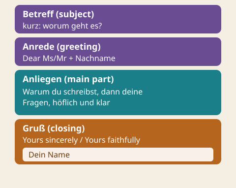
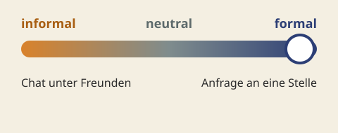

Eine formelle E-Mail schreiben
Mit einem KI-Tutor lernen
Ein KI-Tutor erklärt dir diese Seite und hilft dir bei den Aufgaben. Wähl deinen Assistenten:
Mit Claude öffnen Mit ChatGPT öffnen Mit Mistral Vibe öffnen
Du nutzt dein eigenes Konto beim Anbieter. Der Assistent ist kein Angebot von lernapps.net: lernapps liefert nur Inhalte und Aufgaben. Die Wahl gilt für alle Seiten, nur auf diesem Gerät.
Worum es geht
Sophie hat mit Mr Anderson gesprochen und ihm ihre Schule beschrieben. Jetzt hat sie noch Fragen zur Anzeige und schreibt ihm eine E-Mail, die höflich und genau ist. Danach kannst du eine formelle E-Mail schreiben, zum Beispiel um Informationen zu erfragen.
Aufgabe
Lösung
Hi everyone
Hi everyone ist eine lockere Begrüßung. Der Betreff soll sagen, worum es in der Mail geht.
Question about the holiday job richtige Antwort
Richtig: Der Betreff nennt kurz das Thema.
Hello, I have some questions about the holiday job and the working hours
Das ist zu lang. Der Betreff ist eine kurze Überschrift, die Fragen stehen in der Mail.
Der Betreff ist kurz und sagt, worum es geht.
Lesestück · Sophies Anfrage an die Bücherei
Lies Sophies Mail, eine lockere Nachricht zum Vergleich und die Antwort der Bücherei. Die Zahlen vor den Zeilen brauchst du bei den Aufgaben. Schwere Wörter stehen hier.
| Englisch | Deutsch |
|---|---|
| grateful | dankbar |
| reply | die Antwort |
| attached | angehängt |
| details | die genauen Angaben |
| look forward to | sich freuen auf |
| advert | die Anzeige |
| file | die Datei |
- Subject: Question about the Summer Library Assistant job
- Dear Mr Anderson,
- I am writing to ask for more information about the Summer Library Assistant job in your advert.
- Thank you for reading my message about my school. I like books, and I enjoy working with people. I would like to know more before I apply.
- Could you please tell me which days of the week I would work? Is it possible to start in the first week of the holidays?
- I would be grateful for your reply. I look forward to hearing from you.
- Yours sincerely,
- Sophie Weber
Aufgabe
Lösung
Sie möchte einen Termin für ein Vorstellungsgespräch
Davon steht in den Zeilen 3 bis 6 nichts. Sie fragt nur nach Informationen.
Sie möchte sich schon für die Stelle bewerben
Zeile 4 sagt, dass sie mehr wissen möchte, before I apply. Die Bewerbung kommt später.
Sie möchte mehr über die Stelle wissen richtige Antwort
Richtig: Zeile 3 sagt, dass sie nach mehr Information fragt.
Das Anliegen steht in Zeile 3, gleich nach der Anrede.
- The same question in a chat with a friend
- Hi! Saw an ad for a summer job at the library. Do you know if I can start in the first week? Can't wait!
- Speak soon, Sophie
- The reply from the library
- Dear Ms Weber,
- Thank you for your questions. The job is part-time, as the advert says, and you can find the details in the attached file.
- If you are still interested, please send me your CV and a short letter about why you want the job.
- Yours sincerely,
- Mr Anderson
Aufgabe
Lösung
Zeile 2 beginnt mit Dear und dem Namen richtige Antwort
Richtig: Dear Mr Anderson ist eine formelle Anrede.
Zeile 7 schließt mit Yours sincerely richtige Antwort
Richtig: Das ist ein formeller Gruß.
Zeile 10 beginnt mit Hi
Zeile 10 gehört zur lockeren Nachricht an eine Freundin, nicht zur Mail an die Bücherei.
Anrede und Gruß der Mail stehen in den Zeilen 2 und 7.
Offene Aufgabe
Wann schreibst du eine formelle E-Mail, und wann reicht eine lockere Nachricht? Gib je ein Beispiel. Schreibe zwei bis drei Sätze auf Englisch.
Eine gute Antwort enthält:
Lösung
I write a formal email to a school office because I do not know the person. I send a short chat message to a friend because we know each other well. Die App bewertet deinen Text nicht. Vergleiche ihn mit den Punkten.
Der Bauplan einer formellen E-Mail

© CC-BY-4.0Der Bauplan von oben nach unten gelesen: so ist auch Sophies Mail an die Bücherei gebaut.
Der Betreff (subject) sagt kurz, worum es geht. In der Anrede stehen Dear, Ms oder Mr und der Nachname. Ms passt für jede Frau. Kennst du den Namen nicht, schreibst du Dear Sir or Madam. Im Anliegen sagst du, warum du schreibst, und fragst höflich: I am writing to ask …, Could you please …? Der Gruß passt zur Anrede, danach steht dein Name.

© CC-BY-4.0Der Ton-Regler steht bei dieser Mail ganz rechts. Das heißt: höflich, ganze Wörter und kein Hi.
Merke
Anrede und Gruß gehören zusammen. Mit einem Namen in der Anrede endest du mit Yours sincerely, ohne Namen mit Yours faithfully. Im Betreff steht ein kurzes Thema, in der ganzen Mail keine Kurzformen.
Übung
Aufgabe
Lösung
Richtige Antwort: 1. Subject: Question about the reading groups, 2. Dear Sir or Madam,, 3. I am writing to ask when the reading groups meet., 4. Could you please send me the dates?, 5. Yours faithfully,, 6. Sophie Weber
Betreff, Anrede, Anliegen, Gruß und Name stehen in dieser Reihenfolge.
Aufgabe
Setze Anrede und Gruß ein.
Tipp
Frage dich: Steht ein Name in der Anrede? Dann passt der Gruß dazu.
- Mail an Mr Hill, dessen Namen du kennst. → Dear Mr Hill, I have a question about the club. Yours …, Sophie Weber
- Mail an eine Firma, bei der du keinen Namen kennst. → Dear …, I have a question about the job. Yours …, Sophie Weber
- Mail an Frau Green, deren Familienstand du nicht kennst. → Dear … Green, I have a question about the course. Yours sincerely, Sophie Weber
Lösung
- Dear Mr Hill, I have a question about the club. Yours sincerely, Sophie Weber
- Dear Sir or Madam, I have a question about the job. Yours faithfully, Sophie Weber
- Dear Ms Green, I have a question about the course. Yours sincerely, Sophie Weber
Dear Ms oder Mr mit Nachnamen endet mit Yours sincerely. Dear Sir or Madam endet mit Yours faithfully.
Aufgabe
Schreibe jeden lockeren Satz so um, dass er in eine formelle E-Mail passt.
Tipp
Lass weg, was zu locker ist. Schreibe Wörter ganz aus.
- Hi, can you send me the dates?
- I'd like to know more.
- Thanks a lot for your help!
Lösung
- Could you please send me the dates, please? (auch richtig: Could you please send me the dates?; Could you send me the dates, please?; Could you send me the dates?; Can you please send me the dates, please?; Can you please send me the dates?; Can you send me the dates, please?; Can you send me the dates?)
- I would like to know more.
- Thank you very much for your help. (auch richtig: Thank you for your help.)
Eine formelle Mail hat keine Kurzformen und keine lockeren Wörter. Mit Could you wird eine Frage höflich.
Aufgabe
Setze das fehlende Wort ein. Du kennst die Redemittel aus Sophies Mail und der Antwort.
Tipp
Die Redemittel stehen im Lesestück, in den Zeilen 6 und 14.
- Ich wäre dankbar für Ihre Antwort. → I would be … for your reply.
- Ich freue mich darauf, von Ihnen zu hören. → I look forward to … from you.
- Danke für Ihre Fragen. → Thank you … your questions.
Lösung
- I would be grateful for your reply.
- I look forward to hearing from you.
- Thank you for your questions.
Feste Redemittel machen eine Mail höflich. Nach look forward to steht eine -ing-Form.
Aufgabe
Höre den Satz und schreibe ihn auf.
- KI
- KI
- KI
Lösung
- Check your spelling before you send the message.
- A formal message starts with a polite greeting.
- Please reply to this email as soon as possible.
Die Sätze zeigen, worauf man bei einer Mail achtet.
Selbst sprechen und schreiben
Aufgabe
Höre die Sätze und sprich sie nach. So klingt ein höflicher Anfang und ein höflicher Schluss.
- I have one question about the reading programme.KI
- Many thanks for your help and information.KI
- I would appreciate an answer before the weekend.KI
Zum Aufnehmen braucht diese Aufgabe JavaScript. Die Beispiele kannst du auch ohne anhören.
Lösung
- I have one question about the reading programme.
- Many thanks for your help and information.
- I would appreciate an answer before the weekend.
Offene Aufgabe
Deine Klasse möchte die Bücherei besuchen. Schreibe eine formelle E-Mail an die Bücherei und frage nach einem Termin. Du kennst keinen Namen.
Eine gute Antwort enthält:
Lösung
Subject: Visit for our class
Dear Sir or Madam,
I am writing to ask about a visit to your library with my class. Could you please tell me when the library is open for school groups? I would also like to know how many students can come.
Thank you for your help.
Yours faithfully,
Your name
Die App bewertet deinen Text nicht. Vergleiche ihn mit den Punkten.
Wie es weitergeht
Du kannst jetzt höflich nach Informationen fragen. Mr Anderson bittet um einen CV und einen kurzen Brief. Als Nächstes schreibst du den Lebenslauf (CV) für den Ferienjob.
Fehler gefunden oder eine Idee für diese App?